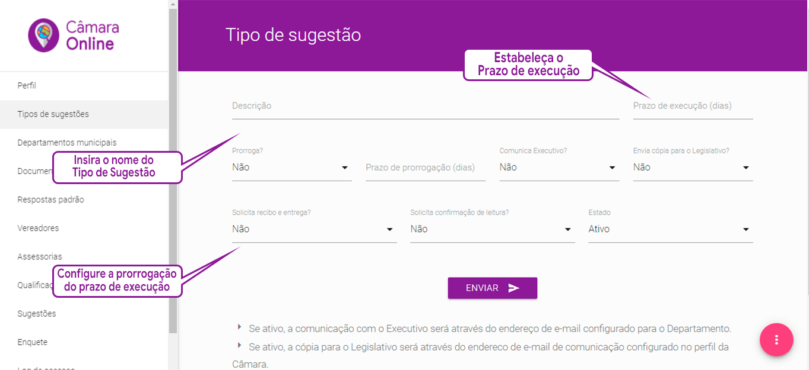

Para que os cidadãos se sintam colaborando com o município, oi sistema foi projetado para eviatar palavras depreciativas tais como problemas, reclamação, queixa, etc. Desta forma todo e qualquer tipo de demanda, que a câmara Municipal deseja receber da população tem o nome de sugestão.
Cadastrando os "Tipos de sugestões"
Continuando com os procedimentos de implantação da Plataforma de Colaboração Cidadã “Câmara Online”, agora é a hora de criar os "Tipos de sugestões" para que as mesmas sejam mostradas no aplicativo para dispopsitivos móveis ou no Assistente Virtual Inteligente, quando de uma demanda por um cidadão.
Nossa orientação é que nessa hora você que está implantando a plataforma em seu município faça uma planilha com as sugestões escolhidas e as classifique por Unidades Gestoras que solucionam esse tipo de demanda na Prefeitura Municipal, entendendo Unidades Gestoras as secretarias de governo, autarquias e empresas terceirizadas que são responsáveis pela solução de cada demanda.
Para tanto, vá ao menu Tipo de sugestões e, apontando o mouse para o botão , no canto inferior direito, clique no botão . A tela de criação de sugestões estará visível agora.
Para criar a sugestão você deve seguir os campos descritos no formulário. A primeira informação a ser cadastrada é o Nome da Sugestão, registrado no primeiro campo de nome “Descrição”.
Na sequência você fornece uma informação importante para a Plataforma “Câmara Online”, ou seja, preecnche o campo "Prazo de Execução (dias)" informando para o sistema qual é o prazo máximo de execução daquela sugestão, dado ao Poder Executivo, a partir do qual, a ausência de cumprimento da mesma será considerada atraso e fará a plataforma disparar uma mensagem ao cidadão requisitante perguntando se o problema foi resolvido.

Cadastro de Tipo de Sugestão
A Plataforma “Câmara Online” permite que o prazo dado ao Poder Executivo para a solução da demanda seja prorrogado se no campo “Prorroga?”, você inserir a opção “Sim”.
Se você optou pela prorrogação de prazo de execução, preencha os seguintes campos:
“Prazo de prorrogação (dias)” para informar qual o prazo fatal para o poder executivo solucionar a demanda;
“Comunica Executivo?”: Optando por “Sim”, o sistema envia e-mail de cobrança ao executivo por ocasião do termino do prazo para execução;
“Envia cópia para o Legislativo?”: Optando por “Sim”, o sistema envia cópia do e-mail de cobrança para servidor do legislativo cadastrado no Perfil da Câmara Municipal.
“Solicita recibo de entrega?”: Optando por “Sim”, o sistema envia ao servidor do Legislativo cadastrado no perfil da Câmara Municipal o recibo de entrega do e-mail encaminhado ao Executivo.
“Solicita confirmação de leitura?” Optando por “Sim”, o sistema envia ao servidor do Legislativo cadastrado no perfil da Câmara Municipal a confirmação de leitura do e-mail encaminhado ao Executivo.
Finalmente você informará se aquela sugestão irá ou não aparecer imediatamente no APP dos cidadãos e para isso você escolherá no campo "Estado"entre os status Ativo ou Inativo.
Ao clicar no botão ENVIAR sua sugestão estará completamente criada.
Edição de Sugestões
Lembre-se de que a Plataforma “Câmara Online”, é totalmente flexível. Clicando no icone , à direita de cada sugestão, você tem acesso à tela de edição, onde cada uma das características originalmente cadastradas pode ser alterada. Ao clicar no botão ENVIAR, sua sugestão estará completamente editada e as informações alteradas serão salvas.